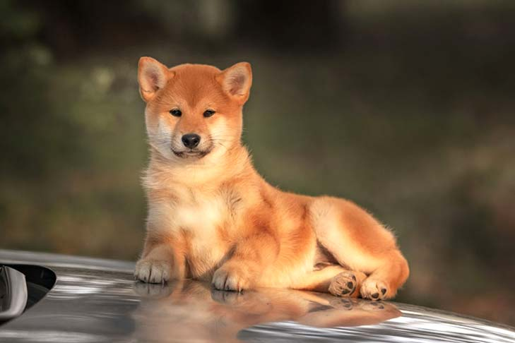
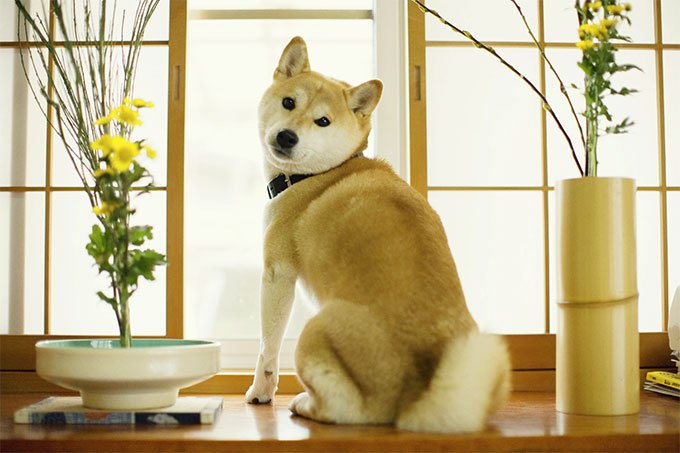
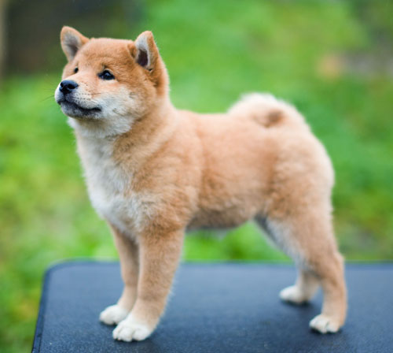
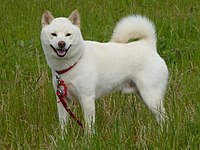
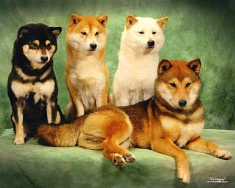

The Shiba Inu dog breed was originally bred to flush birds and small game, and was occasionally used to hunt wild boar. He is one of Japan’s six native breeds: Akita (large), Kishu, Hokkaido, Kai, Shikoku (medium), and Shiba (small). He is known for his spirited personality, small upright ears, and cat-like agility. Today he serves primarily as a companion dog in Japan and the United States.
It’s a face you’ve seen a million times on your Facebook feed: the doge face. “Such Wow.” “Many cool.” “Much awesome.” The Internet jargon is slapped onto a photo of a fox-like dog in multicolored Comic Sans font. That fox-like dog is the intelligent (and now hilarious) Shiba Inu.

Shiba pups are one of the most difficult dog breeds to train; the pups are loud, ignorant, and demands constant attention.
However, after the age of 2 months, the pups begin to mature, and become a lot more obedient. If a trainer would like to give their pups obedience and behavior training, around 8 - 10 weeks old would be the best age to do so. We recommend starting out with a clicker, which is a sound device that creates a high pitched interval when clicked.
If trainers prefer to do the training by hand, we strongly suggest that they rip up a fully cooked chicken into small strips and reward it to their pups. The website by AKC on Training has further info
The Shiba's frame is compact with well-developed muscles. Males are 35 to 43 cm (14 to 17 in) at the withers. Females are 33 to 41 cm (13 to 16 in). The preferred size is the middle of the range for each sex. Average weight at preferred size is approximately 10.5 kg (23 lb) for males, 8 kg (18 lb) for females. Bones are moderate.

The Shiba is double coated, with the outer coat being stiff and straight and the undercoat soft and thick. Fur is short and even on the fox-like face, ears, and legs. Guard hairs stand off the body and are about 4 to 5 cm (1 1⁄2 to 2 in) long at the withers. The purpose of the guard hairs is to protect their underlying skin and to repel rain or snow. Tail hair is slightly longer and stands open in a brush. Their tails are a defining characteristic and makes them stand apart from other dog breeds. Their tails help to protect them from the harsh winter weather. When they sleep, Shiba Inus curl up and use their tails to shield their face and nose in order to protect their sensitive areas from the cold.[citation needed] Shibas may be red, black and tan, or sesame (red with black-tipped hairs), with a cream, buff, or grey undercoat. They may also be white (cream), though this color is considered a "major fault" by the American Kennel Club and should never be intentionally bred in a show dog, as the required markings known as "urajiro" (裏白) are not visible; "Urajiro" literally translates to "underside white". Conversely, a white (cream) coat is perfectly acceptable according to the British Kennel Club breed standard.
The urajiro (cream to white ventral color) is required in the following areas on all coat colors: on the sides of the muzzle, on the cheeks, inside the ears, on the underjaw and upper throat inside of legs, on the abdomen, around the vent and the ventral side of the tail. On reds: commonly on the throat, forechest, and chest. On blacks and sesames: commonly as a triangular mark on both sides of the fore-chest.
More Shiba colours are:
In Japanese culture, the Shiba is described as "spirited boldness". The terms "spirited boldness" (悍威 kan'i), "good nature" (良性 ryōsei), and "artlessness" (素朴 soboku) have subtle interpretations that have been the subject of much commentary.

The Shiba is a relatively fastidious breed and feels the need to maintain itself in a clean state. They can often be seen licking their paws and legs, much as cats do. They generally go out of their way to keep their coats clean. Because of their fastidious and proud nature, Shiba puppies are easy to housebreak and in many cases will housebreak themselves. Having their owner simply place them outside after meal times and naps is generally enough to teach the Shiba the appropriate method of toileting
A distinguishing characteristic of the breed is the so-called "shiba scream". When sufficiently provoked or unhappy, the dog will produce a loud, high-pitched scream. This can occur when attempting to handle the dog in a way that it deems unacceptable. The animal may also emit a very similar sound during periods of great joy, such as the return of the owner after an extended absence, or the arrival of a favored human guest.
A study that was taken on Shiba Inu colours has more info on the different colours that this dog can appear in
Return to the top.

© ErinZhang2019